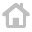

Дата:
{{ today | date: 'dd/MM/yyyy' }}
Время:
{{ clock | date: 'HH:mm:ss' }}

Поиск:
Грудь:
{{ work.name }}
Ноги:
{{ work.name }}
Бицепс:
{{ work.name }}
Протеин:
{{ work.name }}
Гейнер:
{{ work.name }}
Аминокислоты:
{{ work.name }}